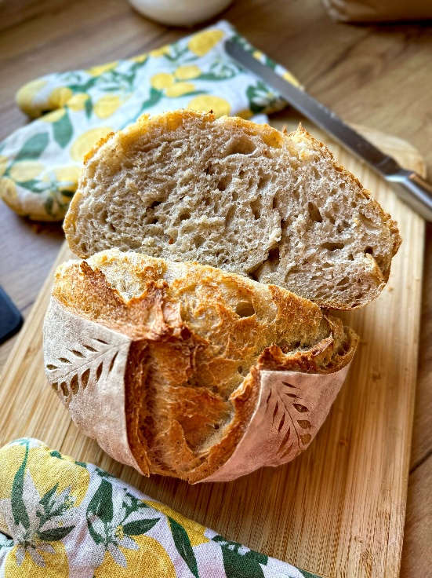
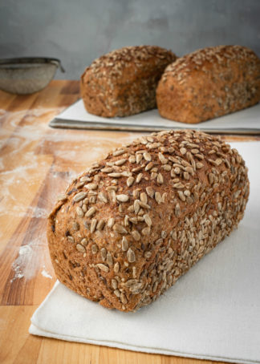
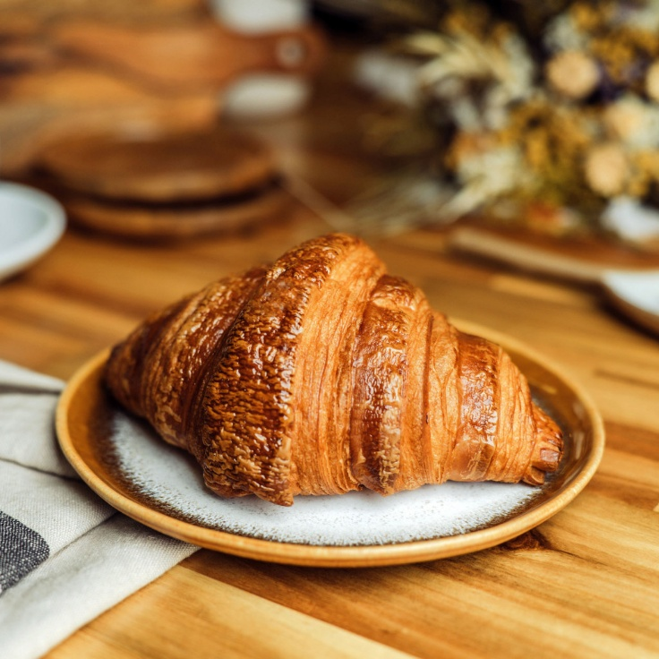
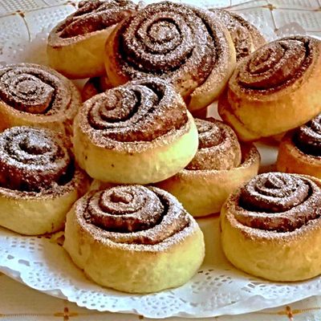

Minden nap

Hagyományos ízek · Helyi alapanyagok
A jó kenyérhez
idő kell.
Természetes vadkovász, hosszú érlelés és frissen sült pékáru – minden nap egy kicsit lassabban, odafigyelve.
Adalékmentes szemlélet, természetes kovász
LASSAN
ÉRLELVE
FRISSEN SÜTVE
ÉRLELVE
FRISSEN SÜTVE
✳Természetes kovászHosszú érlelés, karakteres íz
⌂Helyi alapanyagokKistermelőket részesítünk előnyben
♡Gondos kézimunkaMinőség a mennyiség helyett
A pultból
Friss kedvencek
Egyszerű alapanyagok, jól bevált receptek és egy csipet türelem. Ezeket találod nálunk.

Teljes kiőrlésű rozskenyér
950 Ft750 g · Tartalmas, rostban gazdag választás a mindennapokra.
Érdekel →
Kézműves
☕FRISSEN ŐRÖLT HANGULAT
Az árak tájékoztató jellegűek. A napi készletről érdemes előre érdeklődni.
Kovász · Liszt · Víz · Idő
Kis műhely, nagy odafigyelés
Nem siettetjük,
inkább megvárjuk.
A KenyérMűhely egy fiktív, 2026-ban megálmodott mikrovállalkozás. Azért hoztuk létre, hogy a hagyományos, adalékmentes, hosszan érlelt kovászos pékáruk ízvilágát közelebb hozzuk a mindennapokhoz.
Saját nevelésű vadkovásszal dolgozunk, és a helyi beszállítókat részesítjük előnyben. Fontos számunkra az átláthatóság, a higiénia és az, hogy a vásárlók bepillanthassanak a sütés folyamatába.
01 Természetes alapanyagok02 Hosszú érlelés03 HACCP-szemlélet
Különleges alkalmakra
Te hozod az alkalmat.
Mi a finomságokat.
Családi eseményre, esküvőre vagy céges rendezvényre sós és édes péksütemény-tálakat is készítünk. Írd meg, milyen alkalomra és körülbelül hány főre tervezel, és egyeztetjük a részleteket.
Ajánlatot kérekSós és
édes falatok
édes falatok
Segíts jobbá tenni
Mesélj a tapasztalatodról
Pár rövid kérdés, amivel segítesz nekünk, hogy a következő kenyér még jobb legyen.
Várunk szeretettel
Találkozzunk
a műhelynél.
Kérdésed van, félretennél egy kenyeret vagy rendezvényre rendelnél? Keress minket bátran!
⌖1011 Budapest, Pé pék utca 12.✉info@kenuermuhely.hu☎+36 30 123 4567◷
Nyitvatartás
Hétfő – Péntek06:00 – 18:00
Szombat07:00 – 13:00
VasárnapZárva
A népszerű termékek gyorsan elfogyhatnak, ezért rendelés előtt érdemes érdeklődni.
A projekt anyagai
További dokumentumok
A weboldal a KenyérMűhely projekt része. Az alábbi fájlok a részletes cégbemutatót és a 2026-os, oktatási célú forgalmi kimutatást tartalmazzák.